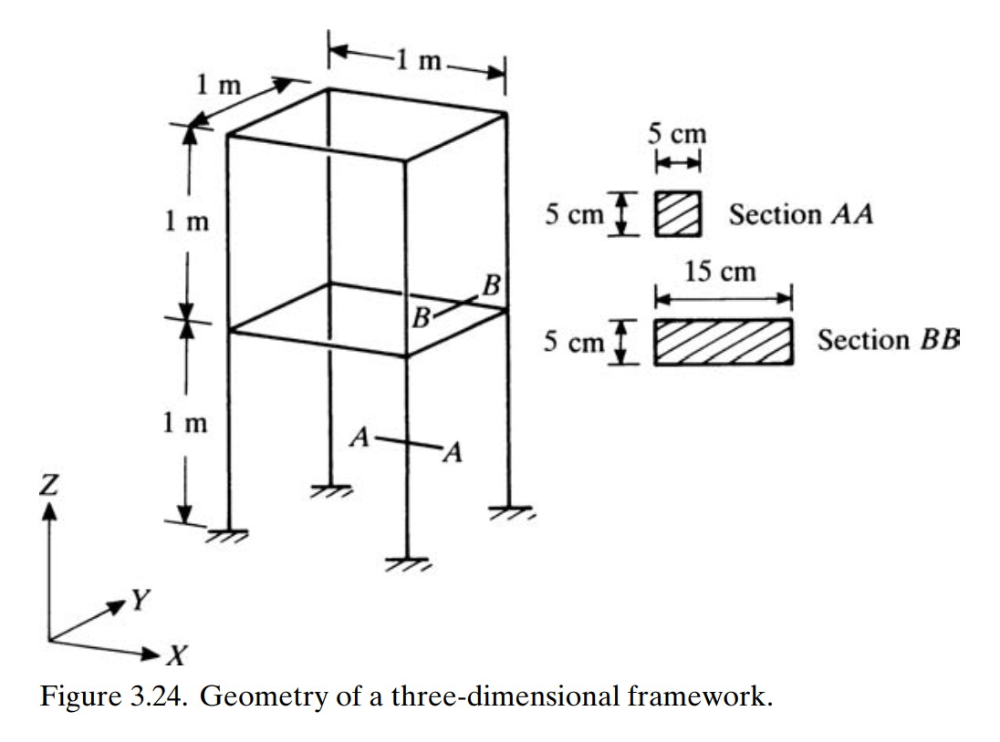
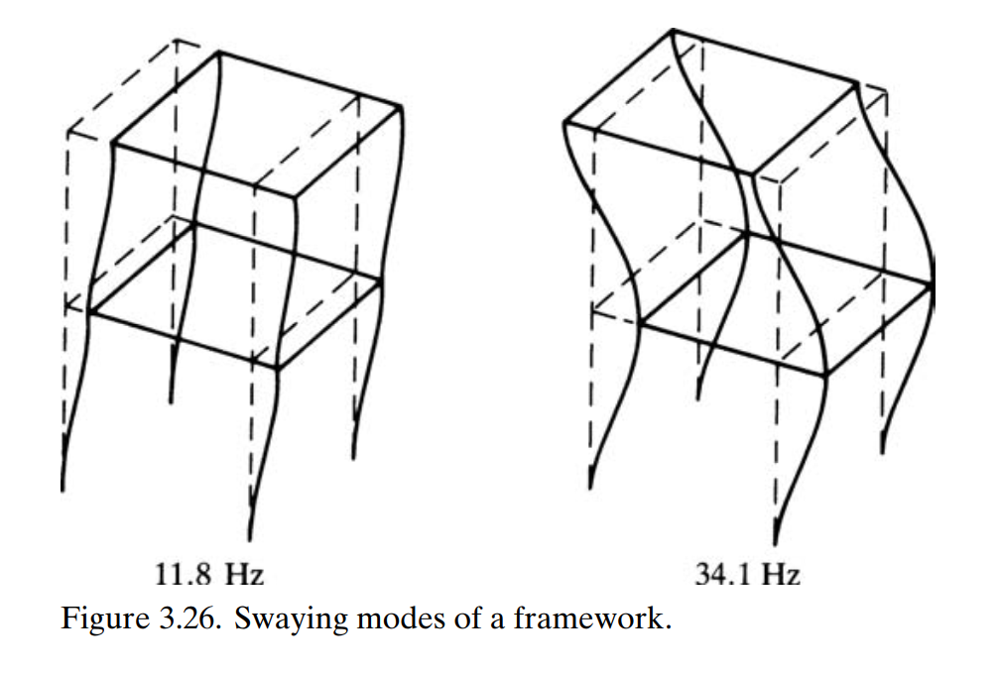
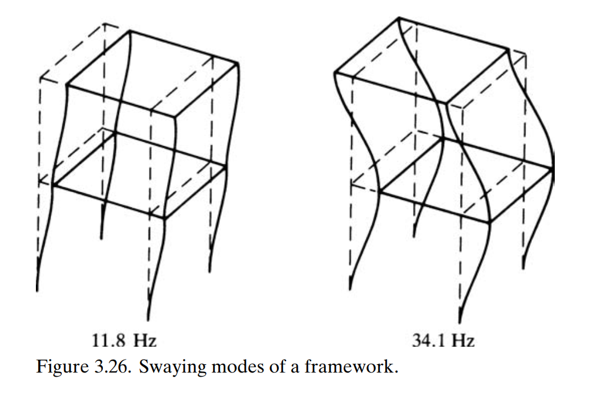

Modal analysis of a two-story frame
This example illustrates how to set up a modal analysis, using a two-story beam frame. Moreover, it also shows how to assemble a model where the beams are not all connected in sequence. This problem was proposed by Petyt.

Geometry of the two-story frame by Petyt
Problem variables
The first step is to define the variables of our problem: geometric and material properties, and discretization. There are two types of beams in the frame: vertical ones have cross-section base b1 and horizontal ones have base b2, but all are made of the same material. We also apply an uniform discretization.
using AeroBeams, LinearAlgebra
# Geometric properties
L = 1
b1,b2,h = 5e-2,15e-2,5e-2
A1,Iy1,Iz1 = b1*h,b1*h^3/12,h*b1^3/12
A2,Iy2,Iz2 = b2*h,b2*h^3/12,h*b2^3/12
J1 = Is1 = A1^4/(Iy1+Iz1)/40
J2 = Is2 = A2^4/(Iy2+Iz2)/40
Kt1,Kt2 = 10/9,3.0864
α = [0; 0; π/2; 0; 0; π/2; 0; 0; 0; 0; 0; 0; π/2; 0; 0; π/2]
β = -[π/2; π/2; 0; -π/2; -π/2; 0; 0; 0; 0; 0; -π/2; π/2; 0; -π/2; -π/2; 0]
# Material properties
E = 219.9e9
ν = 0.25
G = E/(2*(1+ν))
ρ = 7.9e3
∞ = 1e12
# Stiffness and inertia matrices
stiffnessMatrices = [diagm([E*A1,∞,∞,G*J1*Kt1,E*Iy1,E*Iz1]),diagm([E*A2,∞,∞,G*J2*Kt2,E*Iy2,E*Iz2])]
inertiaMatrices = [diagm([ρ*A1,ρ*A1,ρ*A1,ρ*Is1,ρ*Iy1,ρ*Iz1]),diagm([ρ*A2,ρ*A2,ρ*A2,ρ*Is2,ρ*Iy2,ρ*Iz2])]
# Number of elements for each beam
nElem = 10Beams of the frame
In the following we initialize an array of beams and create each one in turn. Notice that their disposition in space is defined by the rotation parameters from the global basis $\mathcal{A}$ to the undeformed beam basis $b^+$, p0. Moreover, since this is a frame, the beams are not all connected in sequence. That means there are connection nodes, which need to be specified. That is done by setting in create_Beam the keywords connectedBeams (an array of the beams to which the present one connects), connectedNodesThis (the corresponding array of nodes of connectedBeams to which the present one connects) and connectedNodesOther (the corresponding array of nodes of the present beam that connect to connectedNodesOther). Notice that these arguments are recursive, that is, you only need to reference beams that were already created (if beam 2 connects to beam 1, those arguments need to be set up only for beam 2).
# Beams
beams = Vector{Beam}(undef,16)
beams[1] = create_Beam(name="beam1",length=L,nElements=nElem,C=[stiffnessMatrices[1]],I=[inertiaMatrices[1]],rotationParametrization="E321",p0=[α[1];β[1];0.0])
beams[2] = create_Beam(name="beam2",length=L,nElements=nElem,C=[stiffnessMatrices[1]],I=[inertiaMatrices[1]],rotationParametrization="E321",p0=[α[2];β[2];0.0],connectedBeams=[beams[1]],connectedNodesThis=[1],connectedNodesOther=[nElem+1])
beams[3] = create_Beam(name="beam3",length=L,nElements=nElem,C=[stiffnessMatrices[2]],I=[inertiaMatrices[2]],rotationParametrization="E321",p0=[α[3];β[3];0.0],connectedBeams=[beams[2]],connectedNodesThis=[1],connectedNodesOther=[nElem+1])
beams[4] = create_Beam(name="beam4",length=L,nElements=nElem,C=[stiffnessMatrices[1]],I=[inertiaMatrices[1]],rotationParametrization="E321",p0=[α[4];β[4];0.0],connectedBeams=[beams[3]],connectedNodesThis=[1],connectedNodesOther=[nElem+1])
beams[5] = create_Beam(name="beam5",length=L,nElements=nElem,C=[stiffnessMatrices[1]],I=[inertiaMatrices[1]],rotationParametrization="E321",p0=[α[5];β[5];0.0],connectedBeams=[beams[4]],connectedNodesThis=[1],connectedNodesOther=[nElem+1])
beams[6] = create_Beam(name="beam6",length=L,nElements=nElem,C=[stiffnessMatrices[2]],I=[inertiaMatrices[2]],rotationParametrization="E321",p0=[α[6];β[6];0.0],connectedBeams=[beams[1],beams[4]],connectedNodesThis=[1,nElem+1],connectedNodesOther=[nElem+1,nElem+1])
beams[7] = create_Beam(name="beam7",length=L,nElements=nElem,C=[stiffnessMatrices[2]],I=[inertiaMatrices[2]],rotationParametrization="E321",p0=[α[7];β[7];0.0],connectedBeams=[beams[1]],connectedNodesThis=[1],connectedNodesOther=[nElem+1])
beams[8] = create_Beam(name="beam8",length=L,nElements=nElem,C=[stiffnessMatrices[2]],I=[inertiaMatrices[2]],rotationParametrization="E321",p0=[α[8];β[8];0.0],connectedBeams=[beams[4]],connectedNodesThis=[1],connectedNodesOther=[nElem+1])
beams[9] = create_Beam(name="beam9",length=L,nElements=nElem,C=[stiffnessMatrices[2]],I=[inertiaMatrices[2]],rotationParametrization="E321",p0=[α[9];β[9];0.0],connectedBeams=[beams[2]],connectedNodesThis=[1],connectedNodesOther=[nElem+1])
beams[10] = create_Beam(name="beam10",length=L,nElements=nElem,C=[stiffnessMatrices[2]],I=[inertiaMatrices[2]],rotationParametrization="E321",p0=[α[10];β[10];0.0],connectedBeams=[beams[3]],connectedNodesThis=[1],connectedNodesOther=[nElem+1])
beams[11] = create_Beam(name="beam11",length=L,nElements=nElem,C=[stiffnessMatrices[1]],I=[inertiaMatrices[1]],rotationParametrization="E321",p0=[α[11];β[11];0.0],connectedBeams=[beams[7]],connectedNodesThis=[1],connectedNodesOther=[nElem+1])
beams[12] = create_Beam(name="beam12",length=L,nElements=nElem,C=[stiffnessMatrices[1]],I=[inertiaMatrices[1]],rotationParametrization="E321",p0=[α[12];β[12];0.0],connectedBeams=[beams[7],beams[9]],connectedNodesThis=[1,nElem+1],connectedNodesOther=[nElem+1,nElem+1])
beams[13] = create_Beam(name="beam13",length=L,nElements=nElem,C=[stiffnessMatrices[2]],I=[inertiaMatrices[2]],rotationParametrization="E321",p0=[α[13];β[13];0.0],connectedBeams=[beams[9],beams[10]],connectedNodesThis=[1,nElem+1],connectedNodesOther=[nElem+1,nElem+1])
beams[14] = create_Beam(name="beam14",length=L,nElements=nElem,C=[stiffnessMatrices[1]],I=[inertiaMatrices[1]],rotationParametrization="E321",p0=[α[14];β[14];0.0],connectedBeams=[beams[13],beams[8]],connectedNodesThis=[1,nElem+1],connectedNodesOther=[nElem+1,nElem+1])
beams[15] = create_Beam(name="beam15",length=L,nElements=nElem,C=[stiffnessMatrices[1]],I=[inertiaMatrices[1]],rotationParametrization="E321",p0=[α[15];β[15];0.0],connectedBeams=[beams[8]],connectedNodesThis=[1],connectedNodesOther=[nElem+1])
beams[16] = create_Beam(name="beam16",length=L,nElements=nElem,C=[stiffnessMatrices[2]],I=[inertiaMatrices[2]],rotationParametrization="E321",p0=[α[16];β[16];0.0],connectedBeams=[beams[7],beams[8]],connectedNodesThis=[1,nElem+1],connectedNodesOther=[nElem+1,nElem+1])Boundary conditions
The frame is clamped at the four base points.
# BCs
clamps = Vector{BC}(undef,4)
clamps[1] = create_BC(name="clamp1",beam=beams[1],node=1,types=["u1A","u2A","u3A","p1A","p2A","p3A"],values=[0,0,0,0,0,0])
clamps[2] = create_BC(name="clamp2",beam=beams[5],node=nElem+1,types=["u1A","u2A","u3A","p1A","p2A","p3A"],values=[0,0,0,0,0,0])
clamps[3] = create_BC(name="clamp3",beam=beams[11],node=nElem+1,types=["u1A","u2A","u3A","p1A","p2A","p3A"],values=[0,0,0,0,0,0])
clamps[4] = create_BC(name="clamp4",beam=beams[15],node=nElem+1,types=["u1A","u2A","u3A","p1A","p2A","p3A"],values=[0,0,0,0,0,0])Model
Our model is composed of the beams and boundary conditions. We further specify the units, merely for plotting purposes, using the constructor create_UnitsSystem.
# Model
twoStoryFrame = create_Model(name="twoStoryFrame",beams=beams,BCs=clamps,units=create_UnitsSystem(length="m",frequency="Hz"))Create and solve problem
We create and solve the eigenproblem, specifying the model, number of modes of vibration to be extracted, and the flag to get the linear structural solution.
# Problem
problem = create_EigenProblem(model=twoStoryFrame,nModes=4,getLinearSolution=true)
solve!(problem)Post-processing
We can now extract the frequencies of vibration and compare to the reference finite element solution. The agreement is very good. Notice that only the first and seconding bending mode (swaying modes) in a specific direction are compared, since this problem is symmetric.
# Frequencies
freqs = problem.frequenciesOscillatory
# Reference frequencies (in Hz)
refFreqs = [11.8; 34.1]
# Display relative errors
ϵ_rel = freqs[[1,4]]/(2π)./refFreqs .- 1.0
println("Relative errors: $ϵ_rel")Relative errors: [0.005782870957318664, 0.006243461716107124]We can also visualize the mode shapes using the function plot_mode_shapes with the appropriate arguments. They compare well to thosed described in the reference.
modesPlot = plot_mode_shapes(problem,scale=1,view=(45,30),legendPos=(0.3,0.1),frequencyLabel="frequency",modalColorScheme=:rainbow) 

Swaying modes of the two-story frame by Petyt
This page was generated using Literate.jl.